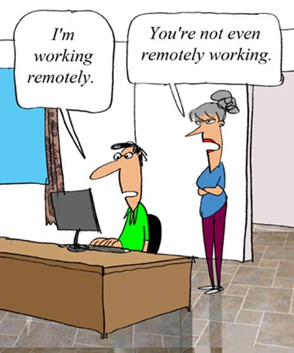

Remote werken met teams

Facts
- Steeds meer remote werken (thuiswerken / Amsterdam)
- 30 miljoen Amerikanen werken minimaal 1 day/week thuis
- 91% remote werkers geloven dat ze effecienter zijn als ze remote werken
- 82% telecommuters geven aan lagere stress level te hebben
- 2020: 1 op 3 mensen werken online, overal ter wereld
Niet voor iedere agency weggelegd
Statuspage - We Tried Building A Remote
Team...
- Moeilijker om te communiceren
- Zwakkere band tussen werknemers
- Verschil in tijdzone
- "Shitty video conferencing software"
- Agenda-technische conflicten
- Fun-factor verdwijnt
Aandachtspunten voor agency
- Solicitaties ook remote
- Wet- en regelgeving
- Je werknemers vertrouwen
- Security moet goed zijn
Pluspunten voor agency
- Werknemers over heel de wereld
- (relatieve) lage infrastructuurkosten, onroerend goed en overhead
- Hogere productiviteit
- Lagere ziekteuitval
video
Niet voor ieder team member weggelegd
- Dezelfde strategie, methodes en ideologien hebben
- Verminderde face to face contact
- Mogelijke afleidingen
- "In the loop" blijven
- Als eilandjes werken
Pluspunten voor team member
- Flexible locatie
- Geen reis- en filetijd meer
- Meer bereiken in dezelfde tijd
- Het verlaagt stress en verhoogt moreel
video
Profiel van een remote team member
Hoe ziet de ideale remote team members eruit?
Agile to the rescue
Remote werk methodieken
Tools
Wat voor tools kunnen ondersteunen?
- Email > Slack (incl. integratie)
- Bijv koffie/watercooler channel
- Per project een channel
- Group voice and video calls & Screen sharing (premium account)
- Conferences > Zoom (free, max 40 minutes)
- Track projects: Asana & JIRA
Tools
Timemanagement, because too much communications will kill you
People/resource management
Belangrijk: Contact houden
- Bijv. daily standups voor project
- Tweewekelijkse chat (showcasing)
- Team retraite
- Conferenties